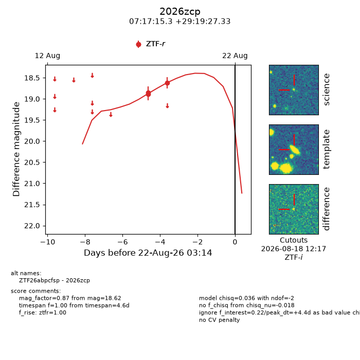
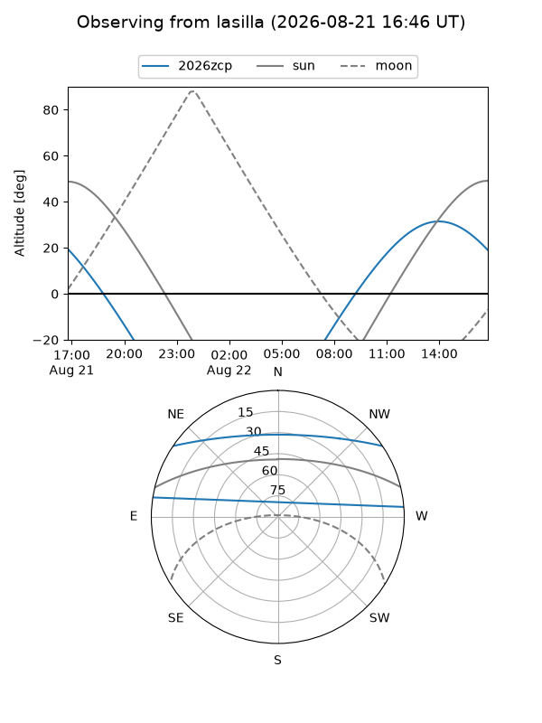
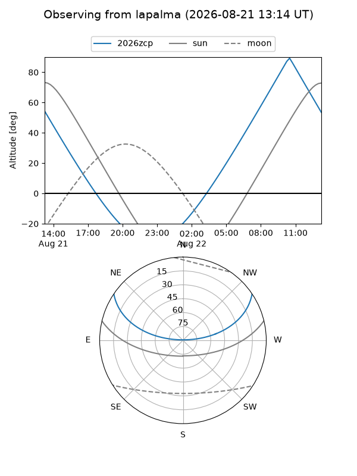
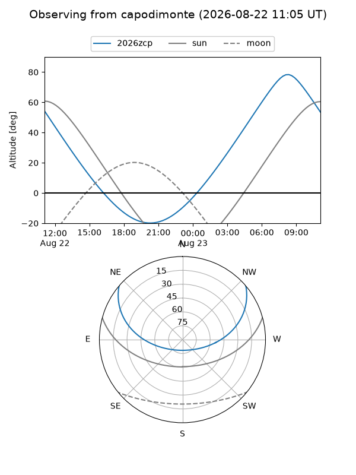
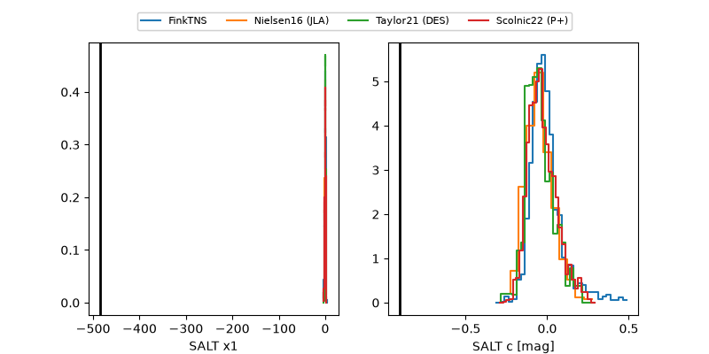

2026zcp
Target 2026zcp at 2026-08-22 14:57
Aliases and brokers:
FINK-ZTF: ztf.fink-portal.org/ZTF26abpcfsp
Lasair-ZTF: lasair-ztf.lsst.ac.uk/objects/ZTF26abpcfsp
ALeRCE-ZTF: alerce.online/object/ZTF26abpcfsp
YSE-PZ: ziggy.ucolick.org/yse/transient_detail/2026zcp
TNS name: wis-tns.org/object/2026zcp
Direct TNS query: direct search
alt names
ZTF26abpcfsp (ztf,fink_ztf)
2026zcp (tns,yse)
Coordinates:
equatorial (ra, dec) = 109.3138,+29.32426
equatorial (HMS+DMS) = 07:17:15.30,+29:19:27.33
galactic (l, b) = (188.6309,+18.09198)
Flags:
TNS type: nan
peak dt: +4.9
Photometry:
last ztfr=18.62
3 ztfr detections
Lightcurve

Visibility



Additional plots
